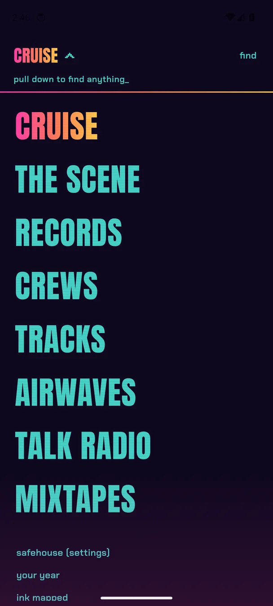
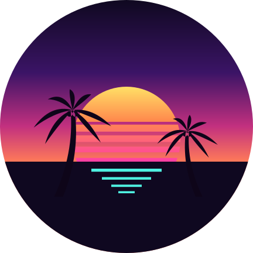
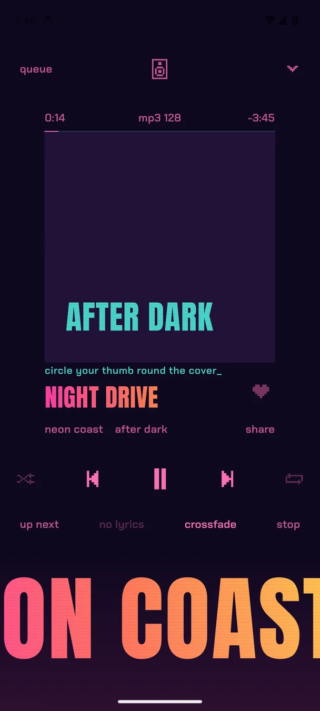
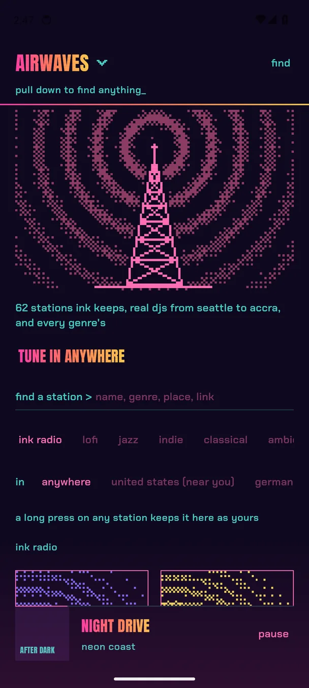

Every screen lit
Headlines glow like a sunset over the sea. The rest is neon pink and teal on midnight, with a tape's scanlines over it all. Your music has places to go: cruise, the scene, records, airwaves, mixtapes.

The soundtrack to your city, after dark. A free music app for Android.
Download for AndroidVersion {{VERSION}}, {{SIZE}}. Android 12 or newer.

Headlines glow like a sunset over the sea. The rest is neon pink and teal on midnight, with a tape's scanlines over it all. Your music has places to go: cruise, the scene, records, airwaves, mixtapes.

Circle your thumb round the cover to scrub through a song, the way you did on an iPod. Flick it for the next one. Songs can run into each other, beats matched, like a DJ set.

Sixty-two independent stations picked by hand, from KEXP in Seattle to NTS in London, each showing what it's playing right now. Thousands more to find by city or genre.
Type your headphone model and the equalizer loads a correction measured for that exact model, from a library of thousands. Then shape the sound on top, the way you like it.
Neon Coast is ink music, an open-source music player, with a new look. Every line of its code is public. Every download is built from that code by GitHub's servers, not on someone's laptop, so what you install is what the code says.
{{SHA256}}